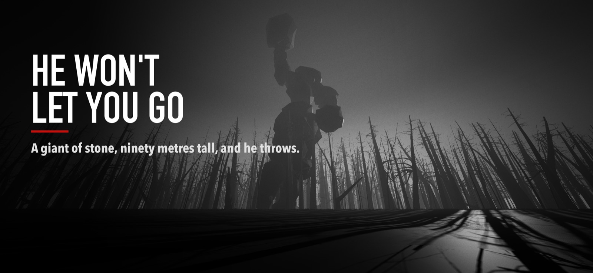
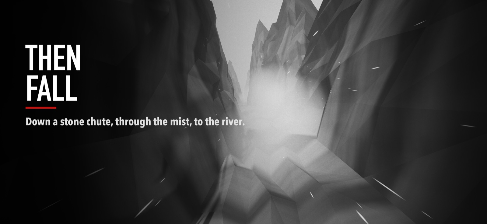

Noir Run
Wingsuit Escape — for iPhone
You wake on your back in a dead forest, and a hand of stone is coming down out of the white sky. Get up. Run. Noir Run is a black-and-white escape in three levels, steered entirely by tilting your phone: lean it to slip between the trunks, tip it away to run faster, toward you to brake. One touch of anything and it's over.

Through the Eerie Forest, down the Boulder Valley under a giant's thrown rocks, and over the edge of the Broken Ridge, falling through mist down a stone chute to the river. Free, with no ads, no purchases and no account.

Support
- How do I steer? Hold the phone in landscape like a steering wheel and tilt it left or right. Tip its top edge away from you to run faster, toward you to slow down.
- It keeps drifting to one side. Hold the phone the way you want and tap the square with the cross on the right edge: that pose becomes straight ahead.
- Too fast? Pick BABY on the start screen. The faint dot in the bottom right corner opens the sliders for speed, view, sensitivity and how thick the forest is.
- Why are two levels greyed out? Each opens once a run has reached it. Your best distance is kept, so once open it stays open.
Anything else — a bug, an idea, a run you're proud of: write to sudilkovsky@gmail.com.